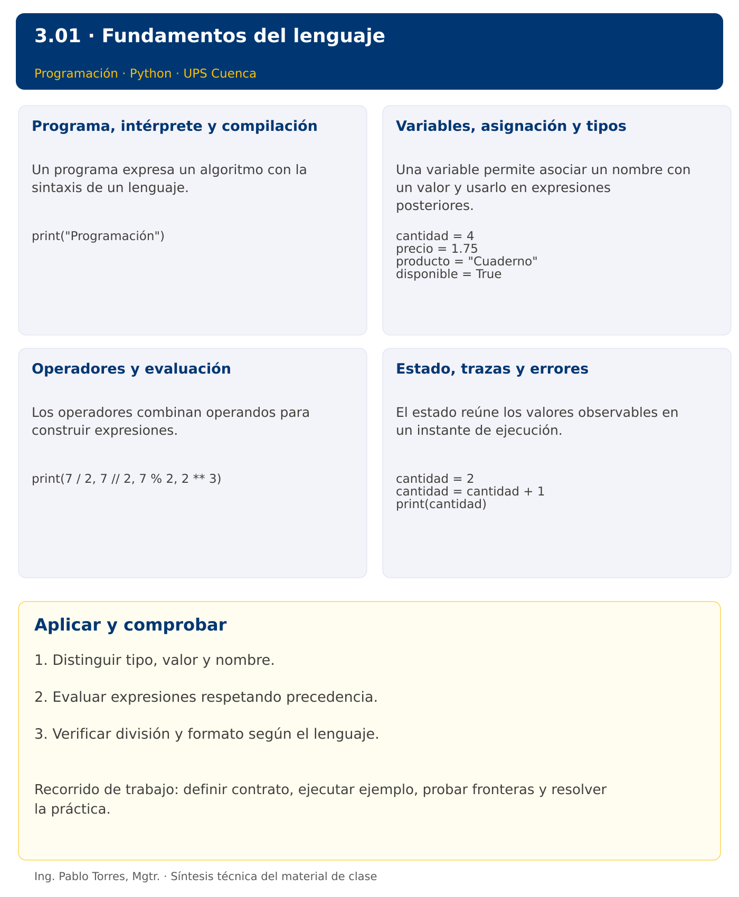

Programación

3.01 · Fundamentos del lenguaje · Python
Autor: Ing. Pablo Torres, Mgtr.
Unidad 3: Lenguaje de Programación
Índice del curso · Versión Java · Presentación · Anterior · Siguiente
Conceptos · Demostración · Práctica de clase · Lo esencial
Contexto. Modelar una compra de cuadernos permite distinguir datos, nombres, expresiones y resultados. El mismo cálculo sirve para contrastar cómo Python y Java representan números y ejecutan instrucciones.
Prerrequisitos. Diseño de algoritmos y manejo básico de archivos.
1. Conceptos y ejemplos
1.1. Programa, intérprete y compilación
Un programa expresa un algoritmo con la sintaxis de un lenguaje. La sintaxis determina las construcciones válidas y la semántica su significado. Distinguir errores de escritura, errores detectados durante la ejecución y resultados lógicamente incorrectos. Guardar los fuentes como texto y ejecutar desde una terminal ubicada en la carpeta correcta. Un editor permite escribir; el intérprete o el JDK permiten ejecutar.
Aplicar en Python. Guardar demo.py y ejecutar python3 demo.py o py demo.py en Windows. CPython compila internamente a bytecode y lo ejecuta: describirlo solo como “leer línea por línea” oculta parte de su funcionamiento. Instalar Python 3.14.7 desde python.org; comprobar python3 --version antes de empezar.
print("Programación")
1.2. Variables, asignación y tipos
Una variable permite asociar un nombre con un valor y usarlo en expresiones posteriores. La asignación evalúa primero la expresión derecha. Usar nombres que expresen el significado y las unidades. Un entero representa cantidades discretas, un real aproximado representa mediciones, una cadena representa texto y un booleano una condición. No confundir apariencia numérica con tipo: un identificador con ceros iniciales puede requerir texto.
Aplicar en Python. Python tiene tipado dinámico: los objetos tienen tipo y un nombre puede volver a asociarse. int permite enteros de precisión arbitraria limitada por memoria. float suele usar doble precisión binaria. Evitar cambiar el significado de una variable durante un mismo algoritmo.
cantidad = 4
precio = 1.75
producto = "Cuaderno"
disponible = True
1.3. Operadores y evaluación
Los operadores combinan operandos para construir expresiones. Multiplicación y división tienen mayor precedencia que suma y resta; usar paréntesis cuando una agrupación sea esencial. El residuo ayuda a comprobar divisibilidad. La división por cero requiere un contrato que la excluya o una validación. Los decimales binarios no representan exactamente todos los decimales habituales, por lo que no basar cálculos monetarios exigentes en igualdad exacta entre aproximaciones.
Aplicar en Python. / produce división real, // división hacia menos infinito, % residuo y ** potencia. Para positivos, 7 // 2 es 3. Con negativos, -7 // 2 es -4. En este curso, los primeros casos de reparto usan enteros no negativos para evitar equivalencias falsas con Java.
print(7 / 2, 7 // 2, 7 % 2, 2 ** 3)
1.4. Estado, trazas y errores
El estado reúne los valores observables en un instante de ejecución. Una traza explica por qué una expresión utiliza un valor anterior o uno actualizado. Distinguir asignación de comparación, nombre de variable de cadena literal y comentario de instrucción. Elegir casos que permitan calcular la respuesta manualmente antes de confiar en el resultado del programa.
Aplicar en Python. Usar # para comentarios y cuatro espacios por nivel cuando aparezcan bloques. Una variable no definida produce NameError. IndentationError describe problemas de bloques. Leer la última línea del traceback y localizar el archivo y línea, sin ocultar el error con un except general.
cantidad = 2
cantidad = cantidad + 1
print(cantidad)
Los bloques breves anteriores ilustran una operación y pueden requerir variables o imports del contexto. Utilizar la demostración siguiente como programa completo.
Síntesis visual

2. Demostración guiada
Problema. Calcular el importe de cuatro cuadernos a 1.75 cada uno y mostrar cantidad e importe.
Contrato de esta demostración. Cantidad entera no negativa y precio no negativo. Multiplicar ambos sin entrada de teclado. Mostrar el total con dos decimales. Esta versión supone datos dentro del dominio y no implementa validación.
Fuente: ejemplos/demo.py.
cantidad = 4
precio = 1.75
total = cantidad * precio
print(f"Cantidad: {cantidad}")
print(f"Total: {total:.2f}")
Ejecutar
Abrir una terminal dentro de 03/3.01-introduccion/python/ejemplos/ y ejecutar:
python3 demo.py
En Windows, usar py en lugar de python3 si esa es la instalación disponible. Comprobar primero su versión.
Salida esperada
Cantidad: 4
Total: 7.00
Interpretación. Seguir las asignaciones y los bloques en orden, identificar qué instrucción produce cada línea y contrastar con el contrato. Modificar un dato por vez y anticipar el resultado antes de ejecutar. La salida de referencia es una expectativa; el registro de verificaciones indica qué ejecuciones se realizaron.
Ejercicios prácticos progresivos
Resolver los siguientes ejercicios en orden. Entregar enunciado, fuente y resultado propio. Los casos mostrados permiten comprobar el contrato y no sustituyen una prueba adicional de frontera.
Ejercicio 01. Mensaje inicial
Mostrar el nombre de la asignatura y la sede, una línea por dato.
Caso de comprobación:
Programación
Cuenca
Ejercicio 02. Ficha de producto
Definir producto="Lápiz" y cantidad=6. Mostrar el nombre y la cantidad separados por un espacio.
Caso de comprobación:
Lápiz 6
Ejercicio 03. Área rectangular
Definir base=8 y altura=3. Calcular el área sin escribir el resultado como constante.
Caso de comprobación:
24
Ejercicio 04. Conversión de minutos
Convertir 135 minutos en horas completas y minutos sobrantes. Trabajar con enteros no negativos.
Caso de comprobación:
2 15
Ejercicio 05. Promedio aritmético
Calcular el promedio de 7, 8 y 9 y mostrar dos decimales.
Caso de comprobación:
8.00
Ejercicio 06. Cambio de unidades
Convertir 2.5 kilómetros a metros y centímetros. Mostrar ambos con un decimal.
Caso de comprobación:
2500.0 250000.0
Ejercicio 07. Compra con descuento
Definir 5 artículos a 4.0 cada uno y descuento del 15%. Calcular subtotal y total con dos decimales.
Caso de comprobación:
20.00 17.00
Ejercicio 08. Intercambio de valores
Intercambiar a=12 y b=5 usando una variable auxiliar. No sustituir directamente por constantes.
Caso de comprobación:
5 12
Ejercicio 09. Descomposición de segundos
Descomponer 7384 segundos en horas, minutos y segundos. Usar cocientes y residuos.
Caso de comprobación:
2 3 4
Ejercicio 10. Recibo ponderado
Calcular la nota ponderada de 8, 6 y 9 con pesos 20%, 30% y 50%. Mostrar dos decimales y comprobar que los pesos suman uno.
Caso de comprobación:
7.90
3. PC3.01 · Práctica de clase
Calcular paquetes completos y unidades sobrantes al distribuir materiales. Definir unidades y capacidad como enteros, sin leer teclado todavía. Exigir unidades >= 0 y capacidad > 0 como precondiciones; documentar qué dato viola el contrato. Mostrar también el costo de los paquetes completos a una tarifa dada. No utilizar decisiones todavía.
Requisitos y restricciones
- Resolver en una sola versión, Python o Java.
- Mantener nombres y responsabilidades indicados; explicar cualquier adaptación idiomática.
- Aplicar únicamente los conceptos ya introducidos.
- Conservar las entradas cuando el enunciado lo exija.
- Distinguir valores fuera de contrato de errores que el programa debe gestionar.
Casos de aceptación de la PC
| Entrada / escenario | Resultado esperado |
|---|---|
| unidades=23, capacidad=5, tarifa=2.5 | 4 paquetes; 3 sobrantes; costo 10.00 |
| unidades=0, capacidad=5 | 0 paquetes; 0 sobrantes |
| capacidad=0 | fuera de contrato; no ejecutar división |
Probar y registrar evidencia
Crear una carpeta personal PC3.01 separada de las demostraciones. Guardar cada caso con entrada, resultado esperado y resultado real. Ejecutar python3 solucion.py desde esa carpeta. Para entradas de teclado, guardar casos/entrada-01.txt y redirigirla con < casos/entrada-01.txt. Para funciones, crear llamadas con los datos de la tabla.
- Registrar
evidencias/PC3.01.mdcon comandos, versión real, salidas y explicación. - Crear un commit funcional como
feat(pc3.01): implementar-regla-principal. - Obtener el hash real con
git rev-parse HEADy anotarlo en la evidencia. - Revisar el cambio con
git show HASHy comparar avances congit diff HASH_ANTERIOR HASH_ACTUAL. Sustituir los marcadores por hashes reales. - Agregar una prueba de frontera distinta de las incluidas y justificar qué error detectaría.
No se requiere proyecto acumulativo ni rúbrica individual de esta PC.
Lo esencial
- Distinguir tipo, valor y nombre.
- Evaluar expresiones respetando precedencia.
- Verificar división y formato según el lenguaje.
Referencias técnicas
Índice del curso · Versión Java · Presentación · Anterior · Siguiente